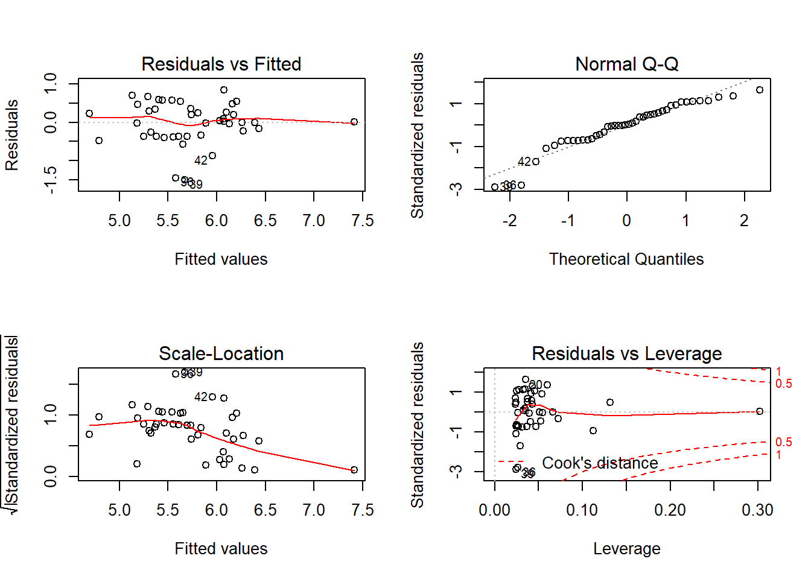

The dataset sardinella.csv comes from a study by Wohlschlag (1957), “Differences in metabolic rates of migratory and resident freshwater forms of an Arctic Whitefish”. It contains weight (log_weight) and oxygen consumption (log_O2) measurements for individuals of Coregonus sardinella caught in freshwater or marine environments.
sardinella <- read.csv("sardinella.csv")
str(sardinella)## 'data.frame': 22 obs. of 3 variables:
## $ environment: Factor w/ 2 levels "freshwater","marine": 2 2 2 2 2 2 2 2 1 1 ...
## $ log_O2 : num 1.59 1.4 1.47 1.66 1.55 ...
## $ log_weight : num 2.5 2.04 2.15 2.35 2.24 ...Answer
mod1a <- lm(log_O2 ~ environment + log_weight, data = sardinella)
summary(mod1a)##
## Call:
## lm(formula = log_O2 ~ environment + log_weight, data = sardinella)
##
## Residuals:
## Min 1Q Median 3Q Max
## -0.28074 -0.02670 0.01742 0.05373 0.16339
##
## Coefficients:
## Estimate Std. Error t value Pr(>|t|)
## (Intercept) -0.06836 0.31719 -0.216 0.831654
## environmentmarine 0.15544 0.04402 3.531 0.002233 **
## log_weight 0.65310 0.13815 4.728 0.000146 ***
## ---
## Signif. codes: 0 '***' 0.001 '**' 0.01 '*' 0.05 '.' 0.1 ' ' 1
##
## Residual standard error: 0.0968 on 19 degrees of freedom
## Multiple R-squared: 0.6023, Adjusted R-squared: 0.5605
## F-statistic: 14.39 on 2 and 19 DF, p-value: 0.0001568Intercept is the intercept (value of log_O2 if log_weight = 0) in freshwater.environmentmarine is the difference between log_O2 in marine vs. freshwater. Saltwater fish consume more oxygen for the same weight.log_weight is the increase in log_O2 when log_weight goes up by 1.Reminder on the interpretation of logarithms: A logarithm of 0 corresponds to a value of 1 and a negative logarithm corresponds to a value < 1 for the original variable. An increase of 1 on the logarithmic scale corresponds to a multiplication by e (about 2.7) of the original variable.
Answer
sardinella$norm_weight <- scale(sardinella$log_weight)
mod1b <- lm(log_O2 ~ environment + norm_weight, data = sardinella)
summary(mod1b)##
## Call:
## lm(formula = log_O2 ~ environment + norm_weight, data = sardinella)
##
## Residuals:
## Min 1Q Median 3Q Max
## -0.28074 -0.02670 0.01742 0.05373 0.16339
##
## Coefficients:
## Estimate Std. Error t value Pr(>|t|)
## (Intercept) 1.40925 0.02612 53.955 < 2e-16 ***
## environmentmarine 0.15544 0.04402 3.531 0.002233 **
## norm_weight 0.10247 0.02168 4.728 0.000146 ***
## ---
## Signif. codes: 0 '***' 0.001 '**' 0.01 '*' 0.05 '.' 0.1 ' ' 1
##
## Residual standard error: 0.0968 on 19 degrees of freedom
## Multiple R-squared: 0.6023, Adjusted R-squared: 0.5605
## F-statistic: 14.39 on 2 and 19 DF, p-value: 0.0001568Intercept is the value of log_O2 for norm_weight = 0, i.e. the mean value of log_weight, in freshwater.environmentmarine is the difference in log_O2 between marine and freshwater (same as before).norm_weight is the increase in log_O2 when norm_weight increases by 1, i.e. when log_weight increases by 1 standard deviation.Answer
mod1c <- lm(log_O2 ~ environment * norm_weight, data = sardinella)
summary(mod1c)##
## Call:
## lm(formula = log_O2 ~ environment * norm_weight, data = sardinella)
##
## Residuals:
## Min 1Q Median 3Q Max
## -0.25609 -0.04721 0.01152 0.04264 0.16735
##
## Coefficients:
## Estimate Std. Error t value Pr(>|t|)
## (Intercept) 1.40521 0.02545 55.207 < 2e-16 ***
## environmentmarine 0.14778 0.04296 3.440 0.002923 **
## norm_weight 0.12689 0.02661 4.769 0.000153 ***
## environmentmarine:norm_weight -0.06479 0.04334 -1.495 0.152265
## ---
## Signif. codes: 0 '***' 0.001 '**' 0.01 '*' 0.05 '.' 0.1 ' ' 1
##
## Residual standard error: 0.0938 on 18 degrees of freedom
## Multiple R-squared: 0.6463, Adjusted R-squared: 0.5873
## F-statistic: 10.96 on 3 and 18 DF, p-value: 0.0002522Intercept is the value of log_O2 for norm_weight = 0, i.e. the mean value of log_weight, in freshwater (same interpretation as before, although the estimate varies slightly).environmentmarine is the difference in log_O2 between marine and freshwater, for a fish with norm_weight = 0 (at the mean of log_weight).norm_weight is the increase in log_O2 when norm_weight goes up by 1 (i.e. the slope of log_O2 vs. norm_weight) in freshwater.environmentmarine:norm_weight is the difference between the slope of log_O2 vs. norm_weight for marine fish compared to the slope for freshwater fish. Since the interaction is negative, the effect of weight on oxygen consumption is weaker for marine fish.However, the interaction is not significant.
The dataset britain_species.csv comes from the study of Johnson and Simberloff (1974), “Environmental determinants of island species numbers in the British Isles”. These data indicate the number of vascular plant species (species) for 42 British isles according to different predictors: area in km\(^2\), elevation in m, number of soil types, latitude and distance from Great Britain in km (dist_britain).
iles <- read.csv("britain_species.csv")
str(iles)## 'data.frame': 42 obs. of 7 variables:
## $ island : Factor w/ 42 levels "Ailsa","Anglesey",..: 1 2 3 4 5 6 7 8 9 10 ...
## $ area : num 0.8 712.5 429.4 18.4 31.1 ...
## $ elevation : int 340 127 874 384 226 1343 210 103 143 393 ...
## $ soil_types : int 1 3 4 2 1 16 1 3 1 1 ...
## $ latitude : num 55.3 53.3 55.6 57 60.1 54.3 57.1 56.6 56.1 56.9 ...
## $ dist_britain: num 14 0.2 5.2 77.4 201.6 ...
## $ species : int 75 855 577 409 177 1666 300 443 482 453 ...\[ S = c A^z \]
Use a linear model to test the hypothesis that the number of vascular plant species follows that equation with an exponent \(z = 0.25\) (one quarter).
Hint: Assume that the estimated value of \(z\) follows a normal distribution. From the estimated value of \(z\) and its standard error, use the formula seen during the second class to calculate the confidence interval.
\[ (\hat{z} + t_{df, \alpha/2} SE, \hat{z} + t_{df, 1-\alpha/2} SE) \]
In this formula, \(SE\) is the standard error, \(\alpha\) is the significance threshold you choose (ex: 0.05) and \(df\) is the number of degrees of freedom of the \(t\) distribution, that you can determine from the summary of the regression.
Answer
With a logarithmic transform:
\[ \log(S) = \log(c) + z \log(A) \]
mod2a <- lm(log(species) ~ log(area), data = iles)Let’s first look at diagnostic plots to see if the model fits.

There is no problem, except perhaps the trend on the Scale-Location plot. It is due to a single point on the right: it is the island of Britain (Britain), which has a surface much larger than the others. So it does not seem that the variance systematically changes along the axis.
Now let’s look at the coefficients.
summary(mod2a)##
## Call:
## lm(formula = log(species) ~ log(area), data = iles)
##
## Residuals:
## Min 1Q Median 3Q Max
## -1.49954 -0.35374 0.01252 0.35354 0.83936
##
## Coefficients:
## Estimate Std. Error t value Pr(>|t|)
## (Intercept) 4.83570 0.16930 28.563 < 2e-16 ***
## log(area) 0.20880 0.03447 6.057 3.93e-07 ***
## ---
## Signif. codes: 0 '***' 0.001 '**' 0.01 '*' 0.05 '.' 0.1 ' ' 1
##
## Residual standard error: 0.5251 on 40 degrees of freedom
## Multiple R-squared: 0.4784, Adjusted R-squared: 0.4653
## F-statistic: 36.69 on 1 and 40 DF, p-value: 3.932e-07The estimate of \(z\) is the coefficient of log(area), ie 0.2088 with a standard error of 0.03447. There are 40 residual degrees of freedom. We calculate the 95% confidence interval from the quantiles of the \(t\) distribution, given by qt.
z <- 0.2088
se <- 0.03447
conf_int <- c(z + qt(0.025, df = 40) * se,
z + qt(0.975, df = 40) * se)
conf_int## [1] 0.1391335 0.2784665Since the value \(z = 0.25\) is in the confidence interval, we do not reject this hypothesis.
\[ \log(species) \sim \log(area) + \log(dist\_britain) \]
Answer
library(dplyr)
iles2 <- filter(iles, island != "Britain")
mod2b <- lm(log(species) ~ log(area) + log(dist_britain), data = iles2)
summary(mod2b)##
## Call:
## lm(formula = log(species) ~ log(area) + log(dist_britain), data = iles2)
##
## Residuals:
## Min 1Q Median 3Q Max
## -1.36615 -0.17134 0.02895 0.28216 0.69688
##
## Coefficients:
## Estimate Std. Error t value Pr(>|t|)
## (Intercept) 5.41797 0.25435 21.302 < 2e-16 ***
## log(area) 0.18119 0.03842 4.716 3.21e-05 ***
## log(dist_britain) -0.14459 0.04676 -3.092 0.00371 **
## ---
## Signif. codes: 0 '***' 0.001 '**' 0.01 '*' 0.05 '.' 0.1 ' ' 1
##
## Residual standard error: 0.4815 on 38 degrees of freedom
## Multiple R-squared: 0.517, Adjusted R-squared: 0.4916
## F-statistic: 20.34 on 2 and 38 DF, p-value: 9.873e-07Note:
Change the % of the prediction interval with the level argument of predict.
Since the response of the model is log(species), the result of predict will be on a logarithmic scale.
Answer
# Nouveau tableau pour les prédictions
iles_nouv <- data.frame(area = c(1, 40), dist_britain = c(5, 20))
iles_pred <- predict(mod2b, iles_nouv, interval = "prediction",
level = 0.90)
iles_nouv <- cbind(iles_nouv, iles_pred)
iles_nouv## area dist_britain fit lwr upr
## 1 1 5 5.185262 4.302868 6.067657
## 2 40 20 5.653201 4.830675 6.475727Finally, we transform lwr and upr to numbers of species with the exponential function.
iles_nouv <- mutate(iles_nouv, esp_min = exp(lwr), esp_max = exp(upr))
iles_nouv## area dist_britain fit lwr upr esp_min esp_max
## 1 1 5 5.185262 4.302868 6.067657 73.91148 431.6680
## 2 40 20 5.653201 4.830675 6.475727 125.29549 649.1908